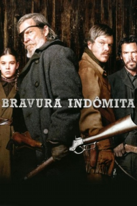

Bravura Indômita (2010)


A vingança vai ser feita... de uma maneira ou de outra.

Avaliação (TMDb):


7.3/10 (4K votos)
Avaliação (Usuário):
Outro Título:True Grit
País:United States, 110 minutos
Idiomas falados:Inglês, Português
Gênero(s):Drama, Aventura, Western
Diretor(s):Joel Coen, Ethan Coen
Codec:MPEG-2 (DVD)
Número: 810
Sinopse:
Após a morte do pai, a jovem Mattie Ross (Hailee Steinfeld) contrata, por cem dólares, o xerife "Rooster" Cogburn (Jeff Bridges) para caçar e capturar o assassino. Ela exige fazer parte desta jornada para ter certeza que seu objetivo será alcançado.
Elenco:
Jeff Bridges, Matt Damon, Josh Brolin, Hailee Steinfeld, Barry Pepper, Domhnall Gleeson, Bruce Green, Ed Lee Corbin, Roy Lee Jones, Paul Rae
Tipo de mídia: DVD5,
Legendas: Inglês, Português
Alugado: Não
Tela: 2.35:1